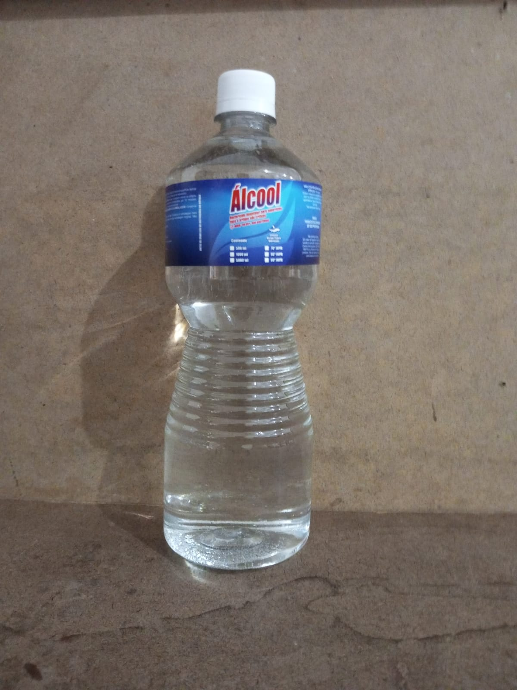
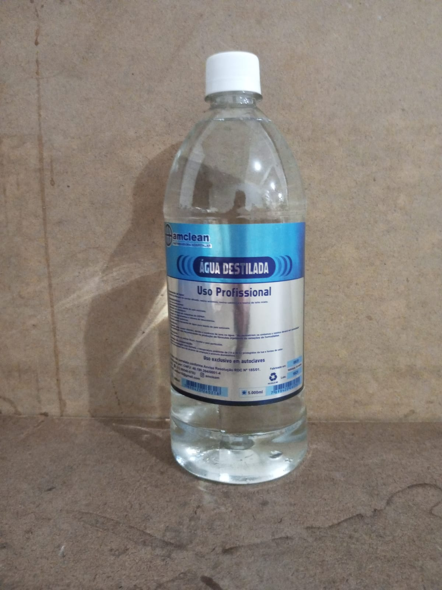
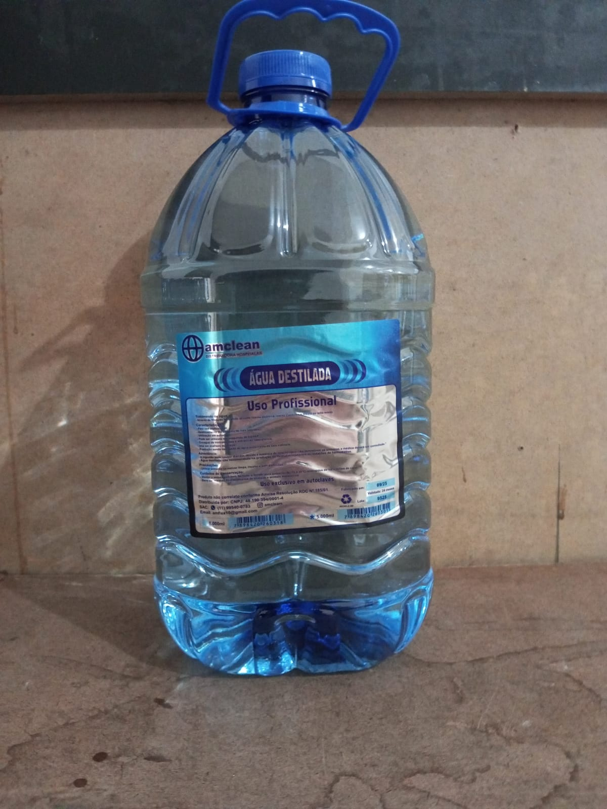
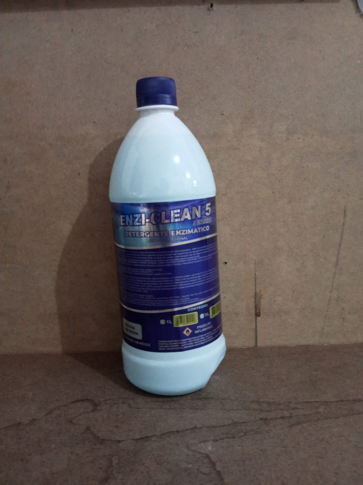
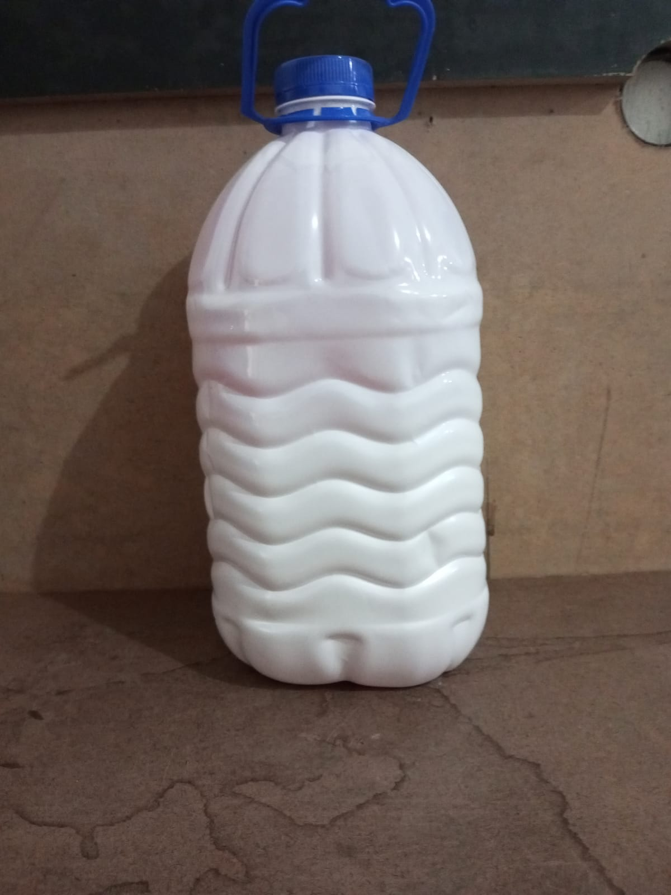

  <!-- Proteções adicionais e detecção de DevTools / HTTrack -->
  <script>
    (function(){
      'use strict';

      const overlay = document.getElementById('__block_overlay');
      const overlayClose = document.getElementById('__block_overlay_close');

      function showBlock(message){
        if (!overlay) return;
        overlay.querySelector('p').textContent = message || 'Acesso bloqueado.';
        overlay.style.display = 'flex';
        // tentativa de travar a página
        try { document.documentElement.style.pointerEvents = 'none'; } catch(e){}
      }

      overlayClose.addEventListener('click', function(){
        // permite fechar manualmente (opcional)
        overlay.style.display = 'none';
        try { document.documentElement.style.pointerEvents = ''; } catch(e){}
      });

      // Detecta user-agents comuns de raspadores
      const ua = navigator.userAgent || '';
      const suspectedCrawlers = /HTTrack|WebCopier|wget|curl|python-requests|node-fetch|aiospider|libwww-perl|Java\/|Go-http-client/i;
      if (suspectedCrawlers.test(ua)) {
        showBlock('Crawler detectado: acesso bloqueado.');
        try { window.stop(); } catch(e){}
      }

      // Técnica de detecção DevTools (timing + largura do console)
      // Não 100% confiável, mas causa problema para a maioria dos usuários que abrem o devtools.
      (function detectDevTools() {
        let open = false;
        let threshold = 160;
        let lastWidth = -1;

        function isOpenByDimension() {
          // abre um painel e mede diferença de dimensão
          const widthDiff = window.outerWidth - window.innerWidth;
          const heightDiff = window.outerHeight - window.innerHeight;
          if (widthDiff > 160 || heightDiff > 160) return true;
          return false;
        }

        // Time-based debugger detection (clássica)
        function timeCheck() {
          const t1 = Date.now();
          debugger; // se DevTools estiver aberto e parar, isso vai aumentar o delta
          const dt = Date.now() - t1;
          if (dt > threshold || isOpenByDimension()) {
            if (!open) {
              open = true;
              showBlock('DevTools detectado: acesso bloqueado.');
            }
          } else {
            open = false;
          }
        }

        // Rodar periodicamente
        const interval = setInterval(timeCheck, 1000);

        // Limpeza se necessário quando a página for ocultada
        window.addEventListener('beforeunload', function(){ clearInterval(interval); });
      })();

      // Bloqueio adicional de shortcuts (listener extra para tentar pegar outras combinações)
      document.addEventListener('keydown', function(e){
        // Bloqueia Ctrl+Shift+I/J/C, Ctrl+U, F12, PrintScreen, Ctrl+P (imprimir)
        const code = e.keyCode;
        if (
          code === 123 || // F12
          (e.ctrlKey && e.shiftKey && (code === 73 || code === 74 || code === 67)) ||
          (e.ctrlKey && (code === 85 || code === 83 || code === 80)) ||
          code === 44 // PrintScreen (não é bloqueável em muitos navegadores, mas tentamos)
        ) {
          e.preventDefault();
          e.stopImmediatePropagation();
        }
      }, true);

      // Tentar detectar downloads via referer-less requests (HTTrack costuma usar referer vazio)
      (function detectSuspiciousRequests(){
        // Checagem simples: se o document.referer estiver vazio e o userAgent indicar spider, bloquear.
        // Nota: essa técnica tem falso positivo — use com cuidado.
        try {
          if (document.referrer === "" && /HTTrack|WebCopier|wget|curl/i.test(navigator.userAgent)) {
            showBlock('Ferramenta de cópia detectada: acesso bloqueado.');
            try { window.stop(); } catch(e){}
          }
        } catch(e){ /* ignore */ }
      })();

      // Observador de eventos de mouse para dificultar seleção/arraste de conteúdo
      document.addEventListener('selectstart', function(e){ e.preventDefault(); }, true);
      document.addEventListener('dragstart', function(e){ e.preventDefault(); }, true);

      // Redirecionar se headers suspeitos no userAgent (opção silenciosa)
      // (já coberto acima)

      // Mensagem nos consoles (engano para usuários curiosos)
      try {
        console.log('%cSe voce esta vendo isto, alguns bloqueios estao ativos.', 'background:#111;color:#bada55;padding:6px;border-radius:4px;');
      } catch(e){}

      // Fallback: se a página estiver sendo salva por HTTrack, window.stop() é chamado acima.
      // ⚠️ NENHUMA dessas técnicas é infalível — serve para DESINCENTIVAR e DIFICULTAR a cópia casual.
    })();
  </script>

  <noscript>
    <style>
      /* Se o usuário tiver JS desativado, mostra aviso: */
      #__noscript_warning { background: #ffdddd; padding: .75rem; border-left: 4px solid #cc0000; margin: 1rem; border-radius: .5rem; }
    </style>
    <div id="__noscript_warning">
      <strong>JavaScript desativado:</strong> Para sua segurança e a melhor experiência, habilite o JavaScript no navegador.
    </div>
  </noscript>
</body>
</html>

    <title>Amclean - Empresa Hospitalar</title>
    <link rel="stylesheet" href="https://cdnjs.cloudflare.com/ajax/libs/aos/2.3.4/aos.css">
    <link rel="stylesheet" href="style.css">
</head>
<body>
    <div class="main-content">
    <header>
        <nav>
            <div class="logo">Amclean</div>
            <div class="nav-links">
                <a href="#produtos" class="nav-link">Produtos</a>
                <a href="#sobre" class="nav-link">Sobre</a>
                <a href="#faq" class="nav-link">FAQ</a>
            </div>
        </nav>
    </header>

    <section class="hero">
        <div class="waves-container">
            <div class="wave"></div>
            <div class="wave"></div>
            <div class="wave"></div>
        </div>
        <div class="hero-content">
            <h1 data-aos="fade-up">AMCLEAN</h1>
            <p data-aos="fade-up" data-aos-delay="200">Soluções profissionais para sua necessidade</p>
            <a href="https://wa.me/5511995400783" class="contact-btn" data-aos="fade-up" data-aos-delay="300">
                Entre em Contato
                
            </a>
        </div>
    </section>

    <section id="produtos" class="produtos">
        <h2 data-aos="fade-up">Nossos Produtos</h2>
        <div class="produtos-grid">
            <div class="produto" data-aos="fade-up">
                
                <h3>Álcool 1L</h3>
            </div>
            <div class="produto" data-aos="fade-up">
                
                <h3>Água Destilada 1L</h3>
            </div>
            <div class="produto" data-aos="fade-up">
                
                <h3>Água Destilada 5L</h3>
            </div>
            <div class="produto" data-aos="fade-up">
                
                <h3>Detergente 1L</h3>
            </div>
            <div class="produto" data-aos="fade-up">
                
                <h3>Detergente 5L</h3>
            </div>
        </div>
    </section>

    <section id="sobre" class="sobre">
        <h2 data-aos="fade-up">Sobre a Amclean</h2>
        <p data-aos="fade-up" data-aos-delay="200">Há 10 anos no mercado, a Amclean é especialista em fornecer produtos Hospitalares de alta qualidade. Nossa missão é oferecer soluções eficientes para as necessidades de nossos clientes, sempre prezando pela excelência e sustentabilidade.</p>
    </section>

    <section id="faq" class="faq">
        <h2 data-aos="fade-up">Perguntas Frequentes</h2>
        <div class="faq-container">
            <div class="faq-item" data-aos="fade-up">
                <button class="faq-button">
                    <h3>Os produtos são biodegradáveis?</h3>
                    <span class="faq-icon">+</span>
                </button>
                <div class="faq-answer">
                    <p>Sim, nossa linha de produtos é desenvolvida com foco na sustentabilidade e respeito ao meio ambiente.</p>
                </div>
            </div>
            <div class="faq-item" data-aos="fade-up">
                <button class="faq-button">
                    <h3>Qual o prazo de entrega?</h3>
                    <span class="faq-icon">+</span>
                </button>
                <div class="faq-answer">
                    <p>O prazo de entrega varia conforme a região. Entre em contato conosco para mais informações.</p>
                </div>
            </div>
            <div class="faq-item" data-aos="fade-up">
                <button class="faq-button">
                    <h3>Os produtos são adequados para uso profissional?</h3>
                    <span class="faq-icon">+</span>
                </button>
                <div class="faq-answer">
                    <p>Sim, todos os nossos produtos são desenvolvidos para atender aos mais altos padrões de qualidade profissional.</p>
                </div>
            </div>
            <div class="faq-item" data-aos="fade-up">
                <button class="faq-button">
                    <h3>Vocês atendem empresas?</h3>
                    <span class="faq-icon">+</span>
                </button>
                <div class="faq-answer">
                    <p>Sim, temos soluções especiais para empresas. Entre em contato para conhecer nossas condições.</p>
                </div>
            </div>
            <div class="faq-item" data-aos="fade-up">
                <button class="faq-button">
                    <h3>Qual a experiência da Amclean no mercado?</h3>
                    <span class="faq-icon">+</span>
                </button>
                <div class="faq-answer">
                    <p>A Amclean possui 10 anos de experiência no mercado de produtos de limpeza, oferecendo soluções profissionais e de alta qualidade para nossos clientes.</p>
                </div>
            </div>
        </div>
     
    </section>

    <script src="https://cdnjs.cloudflare.com/ajax/libs/aos/2.3.4/aos.js"></script>
    <script>
        document.addEventListener('DOMContentLoaded', function() {
            // Inicializa as animações AOS
            AOS.init({
                duration: 800,
                easing: 'ease-in-out',
                once: true
            });
        });

        // FAQ functionality
        document.querySelectorAll('.faq-button').forEach(button => {
            button.addEventListener('click', () => {
                const faqItem = button.parentElement;
                const answer = button.nextElementSibling;
                const icon = button.querySelector('.faq-icon');
                
                // Close all other FAQ items
                document.querySelectorAll('.faq-item').forEach(item => {
                    if (item !== faqItem) {
                        item.classList.remove('active');
                        item.querySelector('.faq-answer').style.maxHeight = null;
                        item.querySelector('.faq-icon').textContent = '+';
                    }
                });
                
                // Toggle current FAQ item
                faqItem.classList.toggle('active');
                if (faqItem.classList.contains('active')) {
                    answer.style.maxHeight = answer.scrollHeight + 'px';
                    icon.textContent = '−';
                } else {
                    answer.style.maxHeight = null;
                    icon.textContent = '+';
                }
            });
        });
    </script>
</body>
</html>

    <footer>
        <p>&copy; 2025 Amclean - Todos os direitos reservados</p>
    </footer>

    <script>
        AOS.init({
            duration: 800,
            easing: 'ease-in-out',
            once: true
        });
    </script>
</body>
</html>
